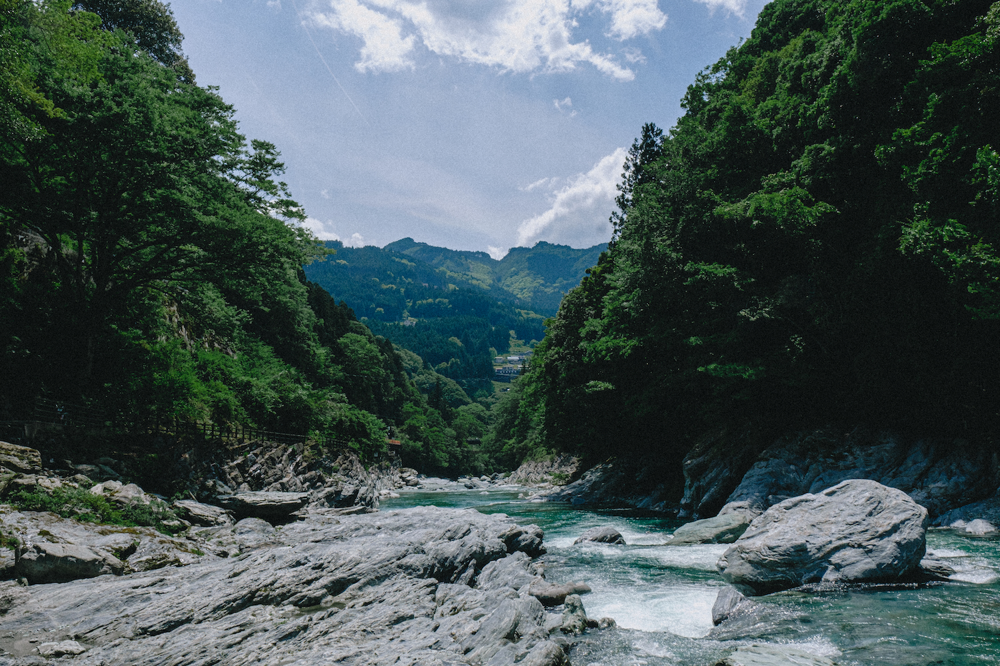
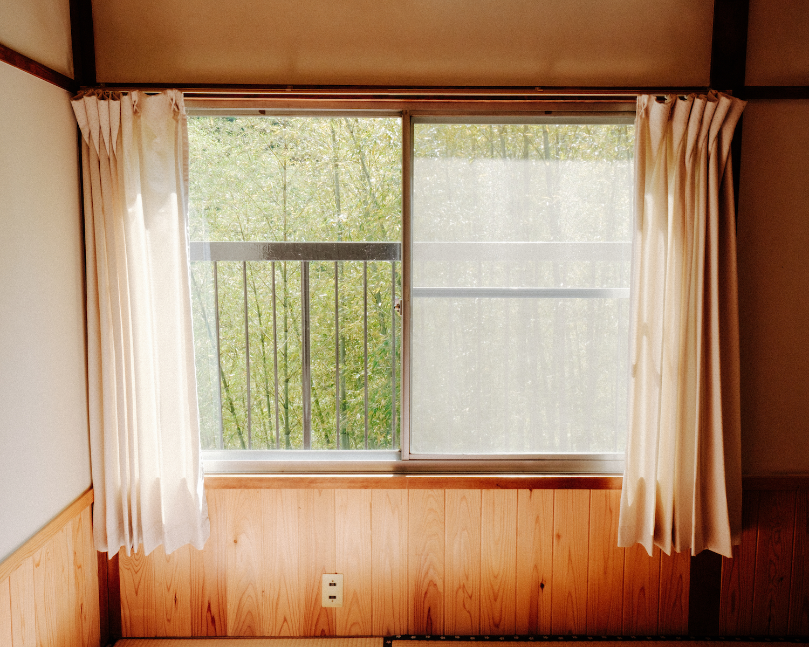
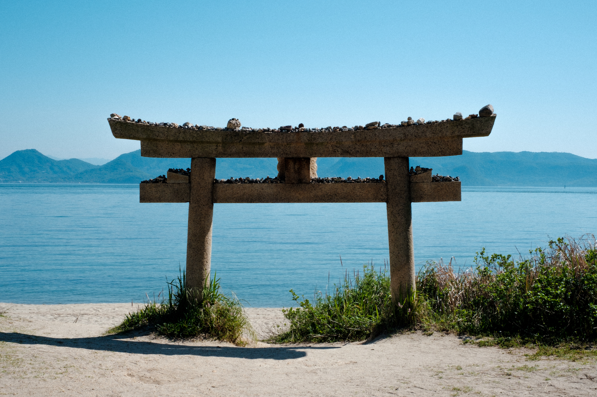
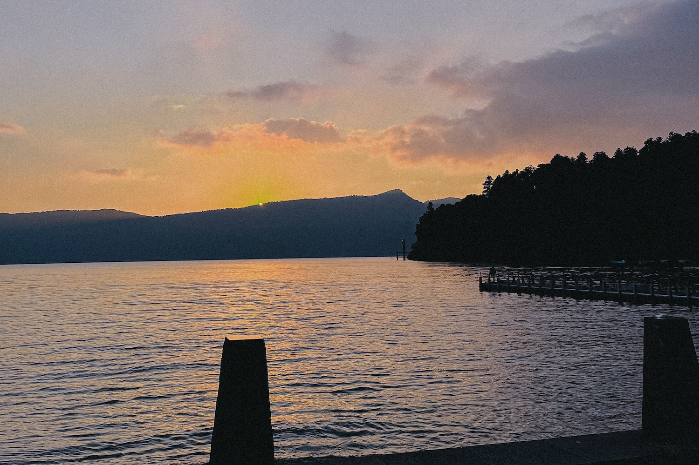
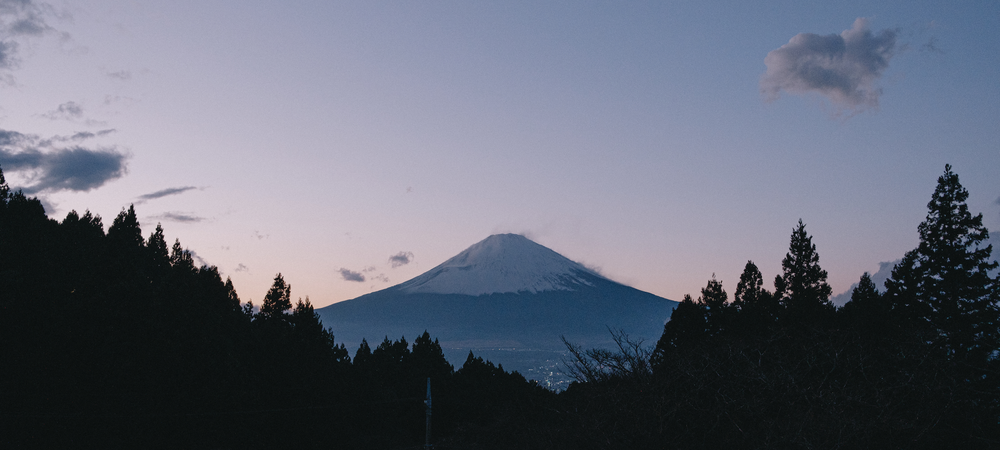
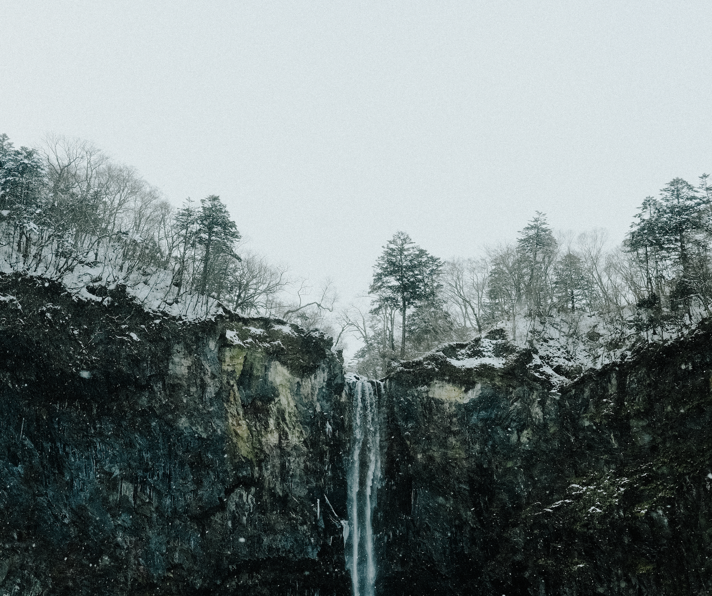

Far Shores
You know I really, truly did plan to make this a more regular thing but alas, here we are over a year later. The last time I wrote something here (on my former website, if we're being pedantic) I was practically a NEET living in Tokyo; fresh off the boat, no job, no friends. Now I'm back home in the UK, soon to return to Japan on a long-term basis, job and friends all waiting for me; a strange limbo where the prospect of escaping my quiet English midland home town is most of what keeps me going. I'm in my (not quite) childhood home in a spare room up in the attic that was not my childhood room (my younger sister and her tiny dog got first dibs on that), listening to Aphex Twin and surrounded by three half-unpacked suitcases and the relics of my time abroad; kanji practice notepads from MUJI, health insurance payment receipts I accidentally left in my backpack, a pair of Edwin selvedge denim jeans, a cheap roll-neck sweater from GU, and a copy of MUSIC MAGAZINE I somewhat optimistically purchased for reading practice because it had Zazen Boys on the cover.
It's funny, you go away for a year and have this hugely impactful personal experience, and when you come home you quite self-centredly expect everyone else to be just as changed as you are. I've been back in my home town for about a month now, and things are mostly identical to a year ago, perfectly preserved in a kind of metaphorical peat bog. Elsewhere some friends have moved, some have changed jobs, and broken up with long-term partners, but in a lot of ways it feels like waking up back in January 2023. Myself at the beginning of that year, on the other hand, feels impossibly far away from the person typing this now.

It's early May as I navigate the length of a crystal-blue ravine in Iya Valley, Tokushima Prefecture. Japanese spring is hitting perfectly, a comfortably warm day that's the kind of thing you'd wait weeks for in a UK summer. I've stuffed roughly a weeks clothes in a grocery store-bought backpack and am getting my money's worth spending entire days walking around in my now battered Stan Smiths on a weeklong trip between Okayama and Shikoku. I'm staying near Oboke, a small town in the already secluded valley recommended by a friend for if I wanted to "get as far away from Tokyo as possible". Out here there's no metro - miss your bus and the next won't come for an hour if you haven't missed the four daily ones already - a single post office ATM, and the winding mountain roads are littered with dilapidated buildings all but reclaimed by nature. The vine bridges attract a modest amount of tourists, mostly from neighbouring South Korea given central Japan's comparative closeness to Busan, but the rest of the valley is practically deserted save from the handfuls of people living in the towns dotted along the roads. I see multiple roadside stops along the way - the closest to Oboke being full of yōkai decorations - and I wonder who they're for. My lodging is a guest house perched on the edge of a sharp drop into the valley below, with two tatami rooms; one large and vacant, and one small occupied by myself, and the elderly couple running the place prepare me a dinner of local beef and mushrooms (of which Iya supposedly has many) in a cosy dining room down a cramped staircase that creaks uncomfortably loud in the night. The futon is already set out, and besides the occasional passing car the only sounds to be heard are the gushing of the ravine below and cool night breeze. 'Redwood Colonnade's cascading echoes of piano ebb through the dense new-growth trees that cover the sides of the valley.

A few days earlier I'm wandering through the middle of Kojima's sleepy suburban sprawl, on Okayama's south coast opening out to the Setoichi inland sea. The town is known as the home of artisanal raw denim but I've arrived far too late to do any window shopping, and the jeans strung across the iconic 'Jeans Street' are more akin to a horror film set than a quirky shopping avenue. Stumbling into the only ramen shop open past 5PM, the elderly pair serve me a shio-ramen (lit. 'salt ramen') I'm certain took a few years off my life expectancy, but nonetheless Japanese grannies' cooking is undefeated. Our chat consists of the usual "why do you speak Japanese?", "oh, the UK? Wow... that's so cool", and "but why did you come all the way to Okayama?". The next day I take the slow train down to Uno and board a ferry to the museum-littered island of Naoshima; my games-poisoned brain couldn't stop thinking about Myst. A day spent slow-roasting in the sun and nodding pensively at modern art later, I'm on the pier recounting my trip - short as it's been so far - to my dad back in England, and I remember in this moment the future feeling more open than ever.
Five months of working in Tokyo later, and the warm climes of springtime central Japan are replaced with a bitterly cold day in the more mountainous Hakone Prefecture. I started a new job in August, and this is my first trip outside of Tokyo in months; Japanese summer with all its humidity and absurd temperatures doesn't exactly make you want to get out and travel. For all its faults, a good UK summer hits like nothing else, while much of Japanese summer feels like something to be collectively endured - although there is something of a nostalgic quality to it, maybe that romanticism comes from watching too many slice-of-life anime. I've made my way from Odawara, on a quiet bus-ride through the mountains and down to Lake Ashi, the picturesque torii gate of Hakone Shrine lapped at its feet by the waves, Mount Fuji hidden behind the clouds. The concentration of tourists increases the closer I get to Hakone Shrine, but it's bliss compared to crossing Shibuya Scramble every day. With half an hour to kill before the next bus back to Odawara, I find a seat on the stone steps along the lakeside to sit and take in the scenery. The low evening sun casts a heavy haze of golden light over the surface of the cold lake, the track 'Neon Shore' by Lifeformed is playing in my headphones. The percussion drops in like a cloud-piercing sunbeam, the cascade of synth pads enveloping the fog-sprinkled lake.

I thought about the time I'd spent in Tokyo earlier that year when I'd first arrived, anxiously stewing away in my sharehouse bedroom or out bewildered in the city; I'd forgotten who that was now, left them behind somewhere along the road. The next day I woke early in my hostel back in Odawara and sleepily trudged back to the train station, passing bars of revellers seemingly still drinking from the previous night, and part of me wondered what would have happened had I tried to join them. I was meeting a friend of a former housemate, a nebulously middle-aged Japanese salaryman who, upon hearing I was heading to Hakone for the weekend, informed me of an old friend of his who organises weekly zazen meditation classes in an old building between Gora and Lake Ashi. I take the Tozan (lit. 'mountain-climbing') Railway back into the Hakone highlands, alighting at an all but deserted spot that no other tourists seemed to have reason to get off at, before another rickety bus ride through the winding mountain roads drops me off at an abandoned roadside station. A wave of sulphur stench hits me, blown down the path from the nearby onsen, and under a tunnel of trees a narrow staircase (precariously slippy from last night's rain) leads me up through a torii gate and to a small hut to the side of a shinto shrine. This zazen man a friendly guy, not exactly befitting of my stereotypical image of Buddhist practitioners; he plays a bamboo flute he carved himself, drives a vintage Mini Cooper, and takes us to a roadside diner for burgers afterwards. All this is to say that by some mundane string of coincidences I found myself barefoot in a cold wooden hut in autumnal Hakone, seated in silence with two elderly gentlemen and wondering if the Josh anxiously stepping onto his Hong Kong-bound flight in March 2023 would've imagined such a thing.
I returned to Hakone a second time during my stay, this time on New Year's Eve. The same ambiguously-aged salaryman housemate had driven us high up into the mountains near Gora, and the day's murky weather has lifted in time for us to watch the year's final sunset behind Mount Fuji, now fully visible in the evening glow. I thought about time again; I had 3 months remaining, and I feel it's probably unecessary to describe the significance of watching the end of 2023 with a clear view of the country's iconic mountain - you can imagine that yourself.

One final excursion away from Tokyo finds me in Nikko, Tochigi Prefecture, just a little over an hour from the capital. A town known for its quiet streets and temples, the surrounding mountains feel almost alpine, a cold and bitter breeze catching my face with the final rays of the late winter sun. A complex of temples and pagodas, dotted with clumps of snow, draws a sizeable crowd of other tourists; a Japanese boy remarks to his friend "kore ga, JAPAN". Sure enough, this feels places very "Japan". I'm totally oblivious to the other 'famous' Nikko landmark, the winding Irohazaka mountain road from Initial D. With the icy climes surrounding me, I listen to Holy Fawn's Death Spells and soak in the atmosphere. After basking in the view of Kegon Waterfall and getting nigh-frostbitten walking by Lake Chūzenji, I rush back into the town centre to make it back to my hostel before check-in closes. The sun has long set by the time I get there, and I'm delighted to find I have my 4-person room all to myself. With outside temperatures sitting below 0 degrees in the mountains, I sit back in the hot outdoor bath at the hostel, overlooking the valley now completely shrouded in trees and darkness, a barrier to the night that feels both protecting and disturbing. Just 2 weeks left.

It feels strange for things to go back to how they were before so unceremoniously; a year is both a long time, and not a lot of time at all. For all the "so what is Japan like?" questions people have, it's hard to describe how doing something like that can change someone so irreversibly; sure the trains are great, yeah the food is amazing, sakura season is lovely, but a lot more happens to someone in 12 months. For all the difficulties and frustrations that come with moving a new country, what a privilege to have such an opportunity, most people on this planet do not enjoy such freedom. It only takes a year for home to become so alien, and you'd be surprised how quickly a new place can become so familiar.